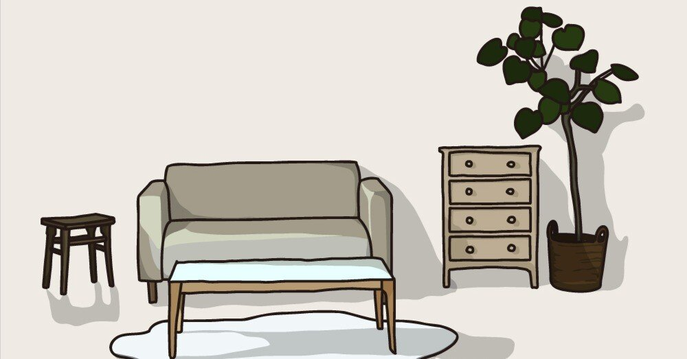

はじめてこのnoteを開いてくれたあなたへ。
はじめまして。ここで文章を書いている、大月海人です。
noteは2017年から始めて、細々と今日まで続けてきました。当初は小説や詩がメインでしたが、最近はエッセイが中心になっています。
なぜそうなってしまったのかを自分なりに分析してみた結果、多分僕の場合は歳を重ねるにつれ空想力が乏しくなっていくようにできているからと導き出せました。真相は誰にも分かりません。
はじめに言ってしまうと、僕の書く文章って大したことないです。それはプロの作家でもないし、特別語彙力に溢れているわけでもないからです。
でも、そんな文章力でも一生懸命に書いていたいと思っています。下手な文章と思われても、思いが伝わる文章を書き続けたいです。
それと、最近はクスッとでも“笑えるエッセイ”を書きたい欲が強くなっています。元々お笑いが好きっていうのも関係あるかもしれません。
今までの人生お笑いに救われてきたように、苦しいことが続く毎日でも、読んでいたら一瞬でも現実を忘れられるエッセイを書いてみたい。そう思っています。
ちなみに、このnoteを書く前に過去の記事を読み返してみたら内容が若さに溢れていて、とてもじゃないけど見てられません。だから、興味ないと思いますけど昔の僕を知らない人は2020年より前の記事は絶対に読まないでください。
決して、お笑いでいうところの前フリをしているわけじゃないので、ご理解のほどよろしくです。シンプルに読まれるのが恥ずかしいと思っているから、真っ正直にこうして頼んでいるのです(とか言いながら「昔の記事を消したりしないのはなぜか」と聞かれても何も答えられません)。
ちょっと茶番を挟んでしまいましたが、結局のところ、僕が運営するnoteでは“居心地のいい場所”を目指していきたいです。
それは読んでくれる皆さんにとっても、ここで文章を書く僕にとっても。noteは僕の生活する部屋であり、隠れ家でもあります。
匿名とはいえ僕の書く内容は僕の生活そのままですし、読んでくれる皆さんがそれを面白がってくれたなら、こんなに嬉しいことはありません。
突然ですがここで！ 僕を少しでも身近に感じてもらえるために、各ジャンルで好きなものを一問一答形式で列挙します🙋
また、付随してそのことについて書いている記事も貼っておきますので、気になるものがあれば覗いてみてくださいね♪
①エッセイ
→星野源作品
(特に『そして生活はつづく』。この作品をきっかけに源さんの音楽や俳優業、ラジオ等々にどっぷりハマってしまいました💛)
https://note.com/kaito0589/n/n9d134526b179
②小説
→伊坂幸太郎作品
(特に『残り全部バケーション』。noteで書いている殺し屋シリーズもお気に入り🔪)
https://note.com/kaito0589/n/ne46c3e96c448
③邦画
→新海誠監督作品
(特に『言の葉の庭』『君の名は。』。両作品とも何回観たことか🥺)
https://note.com/kaito0589/n/n944aa46e07b9
④洋画
→『アバウト・タイム〜愛おしい時間について〜』
(観返すたび、心が温かくなる作品です🥹)
https://note.com/kaito0589/n/n3717bf1134db
⑤国内ドラマ
→生方美久作品
(特に『silent』『いちばんすきな花』。両方シナリオブックを購入するほど大好きです💐)
https://note.com/kaito0589/n/n006159a4aa86
⑥海外ドラマ
→SHERLOCK
(特に『シーズン3』。出演陣・脚本・音楽等々、全部が好き🕵️)
https://note.com/kaito0589/n/nee936f39c3c9
⑦マンガ
→BLUE GIANT
(本作品に触れてから、テナーサックスを始めました🎷)
https://note.com/kaito0589/n/n27ea074c3e42
⑧イラスト
→日下明作品
(特に下記の作品が大好きです。額縁に入れて飾っています✨)
⑨音楽
→ヨルシカ
(n-bunaさんのワードセンスと、suisさんの透き通る声が好きです🎧)
https://note.com/kaito0589/n/n33b00140d0e8
⑩お笑い
→オードリー
(特に『オールナイトニッポン』。ラジオにハマるきっかけをくれた番組です📻)
https://note.com/kaito0589/n/n1b5da44bd6c8
⑪ゲーム
→ポケットモンスターシリーズ
(特に『ポケモンコロシアム』。『金』『銀』からリアルタイムでプレイしています🎮)
https://note.com/kaito0589/n/n36e2569050a2
⑫アウトドア
→キャンプ
(秋から冬にかけて楽しめる焚き火タイムはめっちゃチルい🔥)
https://note.com/kaito0589/n/n0436ad051e02
⑬スポーツ
→ランニング
(ハーフマラソン大会の完走経験あり。心身ともにリフレッシュできて最高！)
https://note.com/kaito0589/n/n43344e130322
⑭街
→吉祥寺
(特に井の頭恩賜公園周辺。四季折々を感じられる心のオアシス🦢)
https://note.com/kaito0589/n/ndf6514dcd999
⑮言葉
→凡事徹底
(「なんでもないような当たり前のことを徹底的に行うこと」。文筆も日常も、基本をなにより大切にしようと思います！)
■文章を書き始めた経緯等の詳しいプロフィールについてはこちらから↓
https://note.com/kaito0809/n/nd1e4c2bc582a
■ご連絡は下記までご用命ください。
kaito0809@aol.com